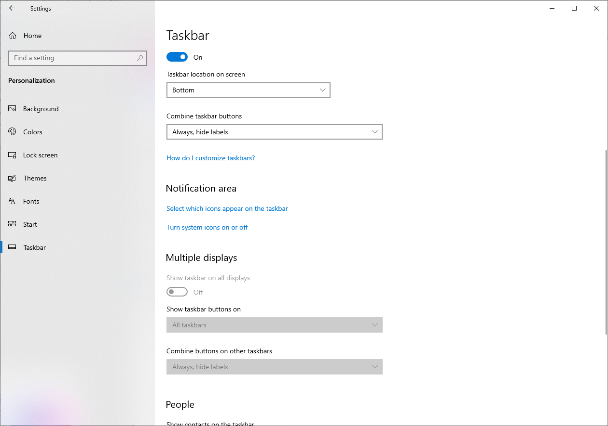
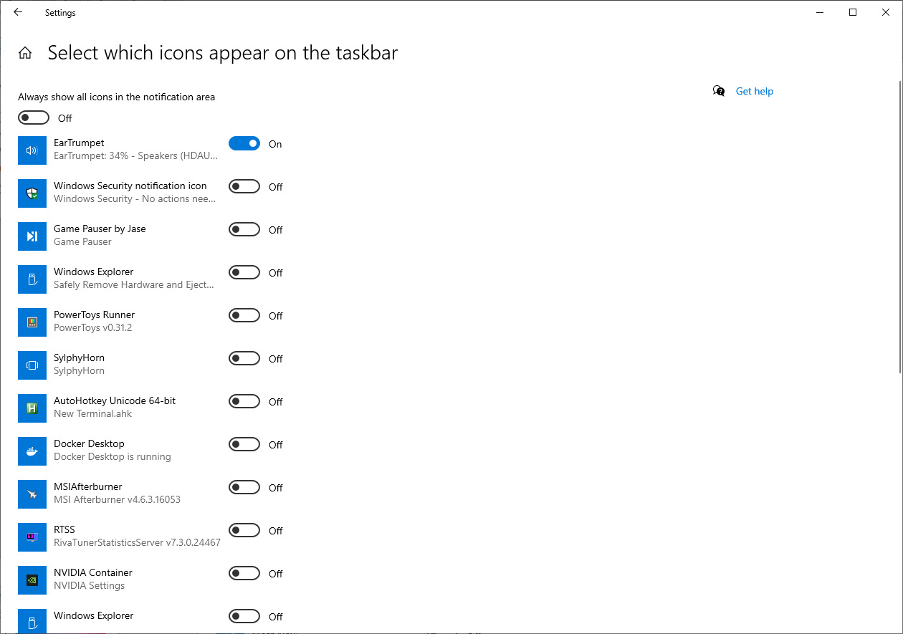
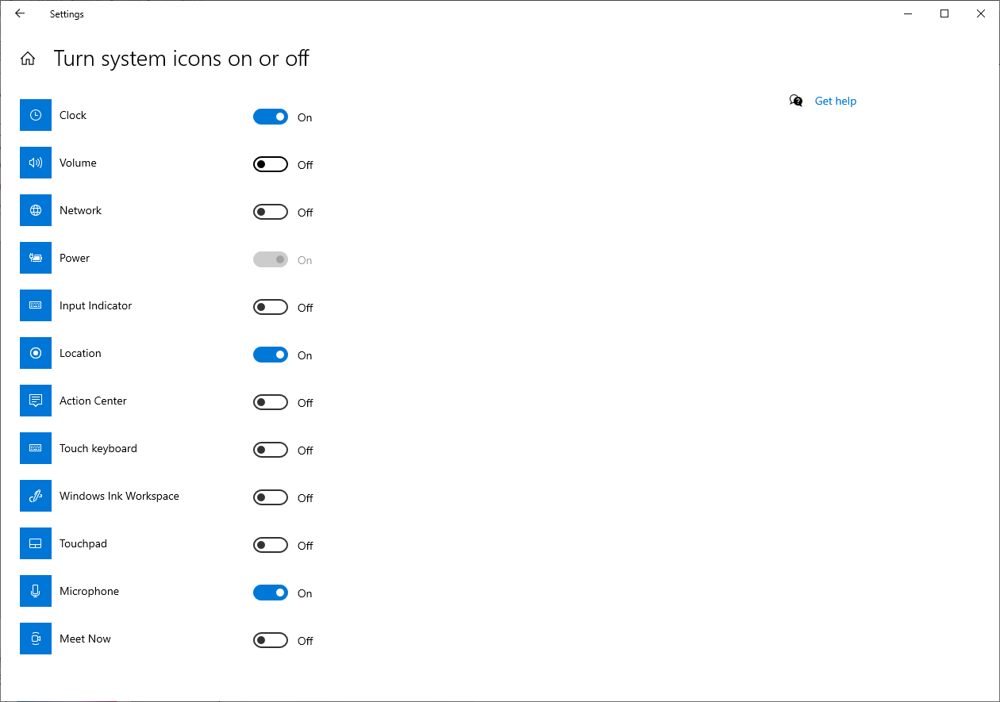

I've recently started using EarTrumpet as a replacement for the standard Windows audio applet that lives in the notification area and been loving that it allows me to adjust the volume per application. Combined with the standard Windows functionality that allows the assignment of individual audio devices to specific applications results in audio management in Windows becoming quite configurable.
One thing that took me a bit of digging to figure out is how to easily replace the standard audio applet with EarTrumpet as I didn't want to have 2 audio applets visible in the notifications area, so thought I'd document the process here.
- Open
Start Menuand search forTaskbar Settings. - Scroll down to the
Notification areasection and click onSelect which icons appear on the taskbar.  - Enable EarTrumpet. 
- Navigate back to
Taskbar Settings. - Click on
Turn system icons on or off. - Disable
Volume. 
You should now only have a single audio applet in your notification area.